Charades · Easy · page 8/11 · all packs
Reject an image by adding its slug to public/charades/charades-easy/reject.txt (append ! to keep it word-only), then re-run node scripts/genimages.mjs.
1 2 3 4 5 6 7 8 9 10 11 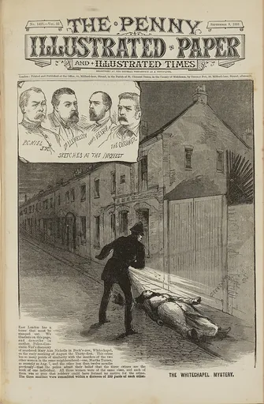
Ripping paper ripping-paperPublic domain · Unknown authorUnknown author · source 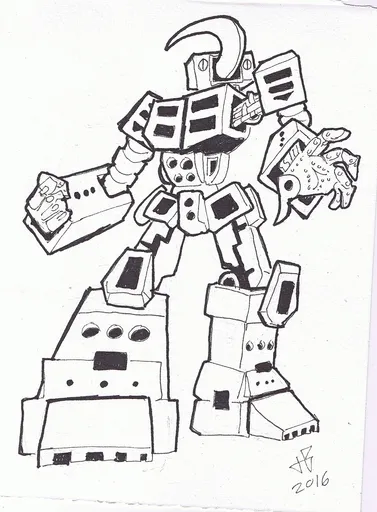
Robot robotCC BY-SA 4.0 · Inkrobot · source 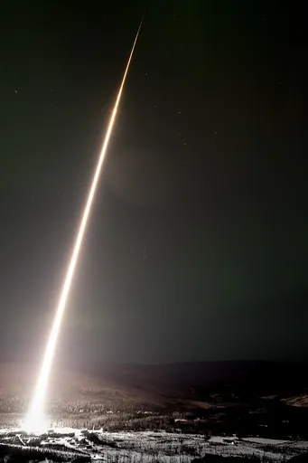
Rocket rocketPublic domain · NASA · source 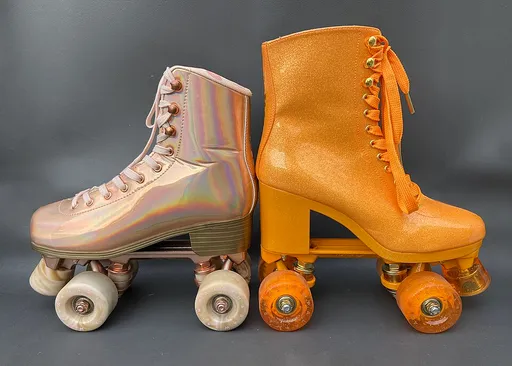
Roller skates roller-skatesCC BY-SA 4.0 · MossAlbatross · source 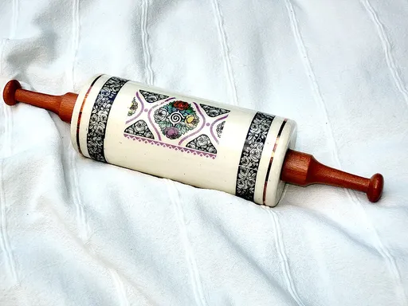
Rolling pin rolling-pinCC0 · Juhele_CZ · source Sandwich sandwichCC BY-SA 2.0 · Malcolm Spicer · source 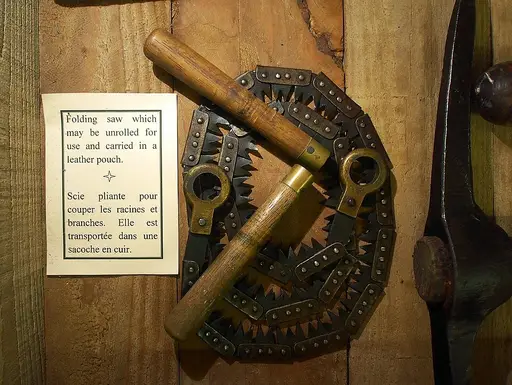
Saw sawCC0 · Alf van Beem · source 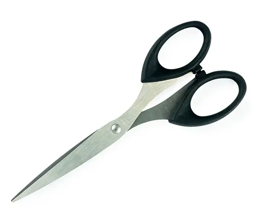
Scissors scissorsCC BY-SA 4.0 · Crisco 1492 · source 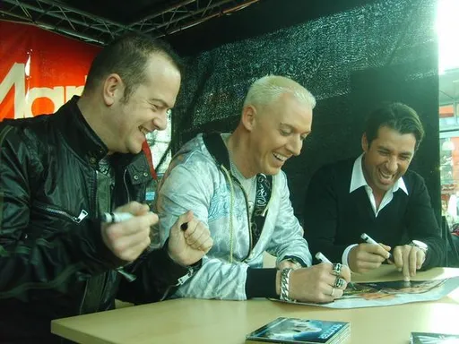
Scooter scooterCC BY 2.0 · uruguayrus · source 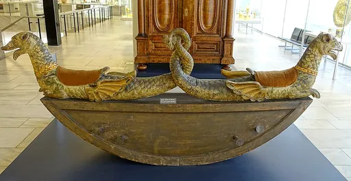
Seesaw seesawPublic domain · Daderot · source Shivering shiveringCC BY 2.0 · Azlan DuPree · source 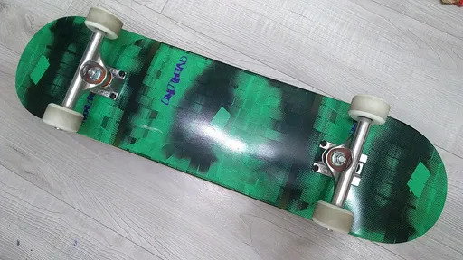
Skateboard skateboardCC0 · Cynroya · source 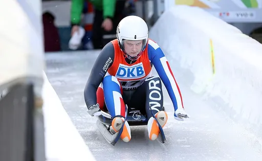
Sledding sleddingCC BY-SA 3.0 · Sandro Halank, Wikimedia Commons · source 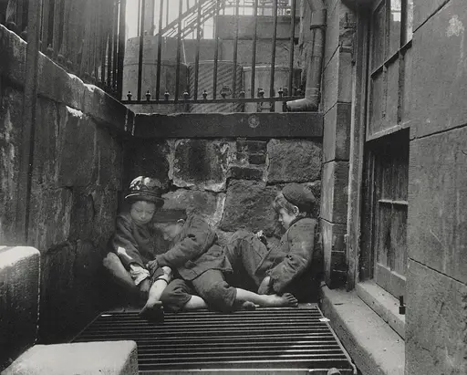
Sleeping sleepingPublic domain · Jacob Riis (1849-1914) · source Slide slideCC BY-SA 4.0 · Airypedia · source 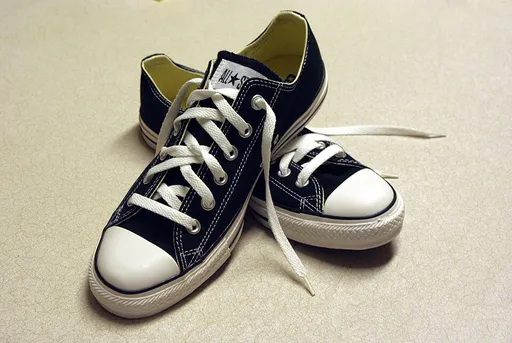
Sneakers sneakersCC BY-SA 3.0 · Brooke Fishwick · source Sneezing sneezingCC BY-SA 2.0 · AnA oMeLeTe from Faro, Portugal · source 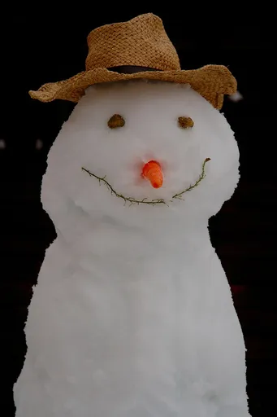
Snowman snowmanCC BY-SA 2.0 · Jason and Alison · source 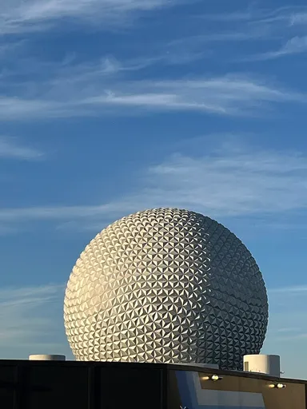
Spaceship spaceshipCC0 · Benoît Prieur · source Spoon spoonCC BY-SA 4.0 · Tore Sætre · source 1 2 3 4 5 6 7 8 9 10 11